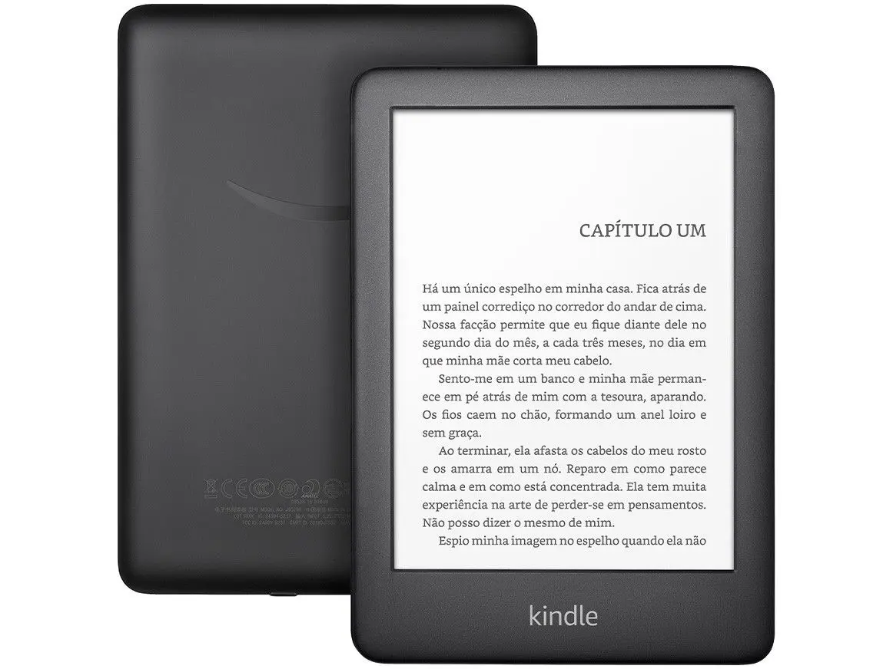

Características
Marca: Kindle
Modelo: B08N3J8GTX
Especificações
Conectividade Wi-Fi: Compatível com redes wifi de 2,4 GHz e 5,0 GHz com protocolos de segurança WEP, WPA e WPA2 via autenticação por senha ou wifi Protected Setup (WPS). Incompatível com conexão de redes Wi-Fi ad-hoc (ou ponto a ponto) | Acessibilidade: O Kindle Paperwhite inclui a capacidade de inverter preto e branco, ajustar o tamanho e tipo de fonte, além do espaçamento entre linhas e as margens | Formatos de conteúdo compatíveis: Formato Kindle 8 (AZW3), Kindle (AZW), TXT, PDF, MOBI sem proteção, PRC nativo; HTML DOC, DOCX, JPEG, GIF, PNG, BMP por meio de conversão | Documentos: Saiba mais sobre os dispositivos Kindle com os Guias de início rápido e do usuário | À prova d’água (IPX8), testado para suportar imersão em 2 metros de água doce por 60 minutos | Cor: Preto | Geração: Kindle Paperwhite (11ª geração) versão 2021 | Tamanho: 174 x 125 x 8,1 mm. | Requisitos de sistema: Nenhum; completamente sem fio e não necessita de um computador para baixar conteúdo
Informações do Produto
Kindle 11 Geração Paperwhite, 8GB, Preto, Iluminação integrada, Wifi, Tela 6.8 Com menos peso, viaje mais longe O Kindle Paperwhite é fino, leve e fácil de transportar para que você possa aproveitar seus livros favoritos a qualquer momento. Apresenta nossa característica tela antirreflexo de 300 ppi, agora com 10% mais brilho em sua configuração máxima, para que você possa ler em qualquer luz. E agora, uma única recarga de bateria via USB-C dura até 10 semanas. A duração da bateria pode variar dependendo do uso. Proteção contra Água Com o Kindle Paperwhite à prova d'água, você tem liberdade para ler e relaxar em mais lugares, como na praia, à beira da piscina ou na banheira. O Kindle tem o Grau de Proteção IPX8 e suporta imersão acidental em até 2 metros de água doce por até 60 minutos, e 0,25 metros por até 3 minutos na água do mar. A iluminação Perfeita Com o Kindle de 11a Geração você pode escolher a temperatura de cor para sua tela: da luz branca até tons de âmbar mais quentes. Essa nova Versão ainda traz a possibilidade de configurar automaticamente quando a luz ambiente se altera para uma experiência de leitura única. Você também pode ajustar o tamanho e o nível de negrito do texto para o que preferir.